Broken Brackets, Communication & Clinic Flow
Repairing the bracket is half of it. Getting the doctor to the right chair at the right time is the other half.
A broken bracket is one of the most common unexpected issues you will meet during an adjustment. Your job is not only to repair it correctly, but to communicate early, prepare efficiently, maintain isolation, and have the doctor arrive at the right moment.
ContentsWhat is in this lesson
| Section | What it covers |
|---|---|
| 1 · The repair | Setup, composite removal, buttering the bracket, retractors, etch, isolation, priming, placement, curing, and the bite check. |
| 2 · The radio call | Chair, bracket, ETA. What a good call sounds like and what a useless one sounds like. |
| 3 · The light bar | Every status, what each one means, and the two ways to change one. |
| 4 · Clinic flow | Priority, the doctor handoff, and continuing productive work while you wait. |
| 5 · Before the patient leaves | The ten-point check every patient gets before they get out of the chair. |
| 6 · ReliaWax | Light-cured wax for irritating brackets, hooks, and wires. |
Section 1The broken bracket repair
1 · Communicate with the clinic coordinator first
As soon as you identify a broken bracket, notify the clinic coordinator. Three things, clearly: what chair you are in, how many broken brackets you have, and your ETA for when you will need the doctor.
"Chair 4. One broken bracket on an incisor. I'm going to prep the bracket and I'll need Dr. Lee in about 3 minutes."
The clinic coordinator coordinates the doctor's movement through the clinic so the doctor arrives when the tooth and bracket are ready. The goal is to avoid the doctor waiting while you are still setting up, and to avoid the tooth sitting exposed and isolated while waiting for the doctor. Section 2 covers this call in full.
2 · Gather the repair setup
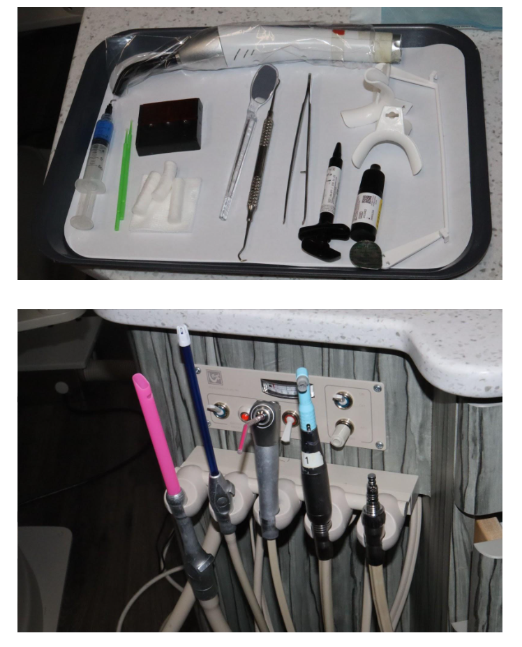
- High-speed handpiece
- Gold flame polishing bur
- Air-water syringe
- High-speed suction
- Slow-speed suction
- Appropriate retractors
- Cotton rolls
- Opal Etch
- Assure Plus primer
- Microbrush
- Resin well
- GoTo adhesive
- PFI
- Correct replacement bracket
- Blue light blocker
- Curing light
Before beginning, confirm you have the correct bracket for the correct tooth.
3 · Remove the old composite
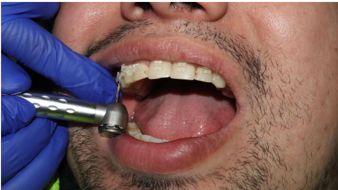
Use the high-speed handpiece with the gold flame polishing bur to remove the remaining composite. The fluted polishing bur removes bonding material while minimizing enamel removal.
Use the side of the bur against the composite. Avoid digging into the enamel with the tip — the tip can gouge enamel if used incorrectly. Another technician should suction during this step whenever possible.
Main burs for removing glue
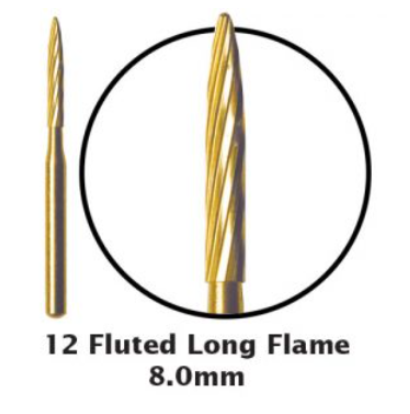
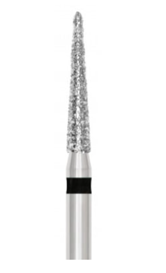
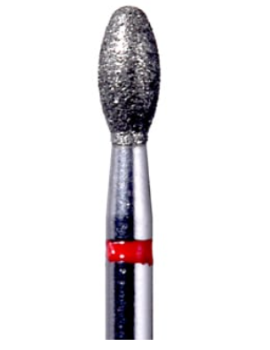
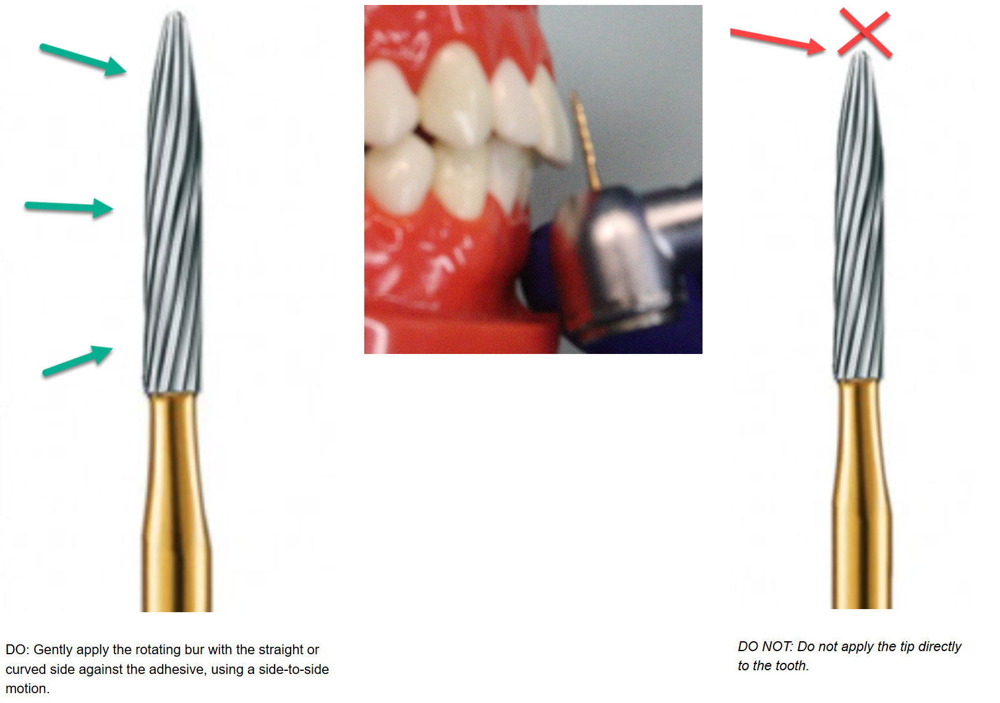
4 · Prepare the bracket before placing retractors
While the patient is still comfortable and before full isolation begins, prepare the replacement bracket.
Buttering is demonstrated inside the full repair video above. It is the step most often done too quickly, so it is worth rewatching that portion on its own.
- Select the correct bracketConfirm the correct tooth, arch, side, and bracket prescription. Do not assume the bracket is correct because it looks similar.
- Apply Assure Plus to the bracket padA small amount onto the pad, then air dry. The goal is a thin layer. Do not leave a pool of Assure Plus sitting on the pad — too much primer interferes with bond quality.
- Apply GoTo adhesiveA small amount of GoTo cement on the bracket pad.
- Butter the bracketUsing the PFI, move the adhesive side to side across the bracket mesh. This is what we call buttering. It pushes adhesive into the grids of the pad and creates mechanical retention between adhesive and bracket base.
- Protect it from lightKeep the prepared bracket under a blue light blocker. Do not leave it exposed to the operatory light — the adhesive can begin curing before the bracket is placed.
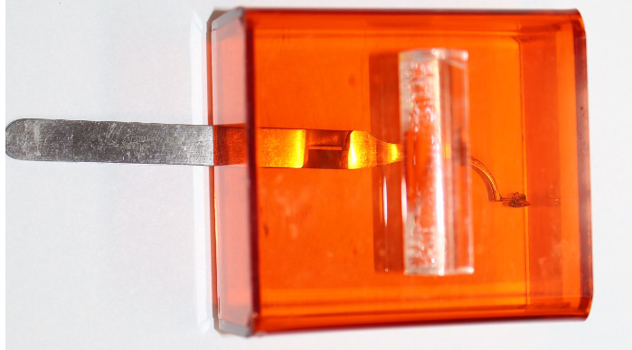
5 · Choose the correct retractor
| Location | Retractor | Why |
|---|---|---|
| Posterior · 5s through 8s | Large white Nola retractor | Better access and isolation for posterior bonding. |
| Anterior · 4–4 | Red retractors | Easier for anterior teeth and premolars through the first premolar region. |
Make sure the lips and cheeks are completely captured by the retractor. Do not simply tuck the retractor under the lip. A poorly seated retractor can slip out during bonding and contaminate the tooth.
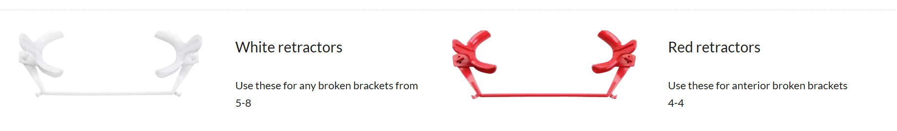
6 · Etch the tooth
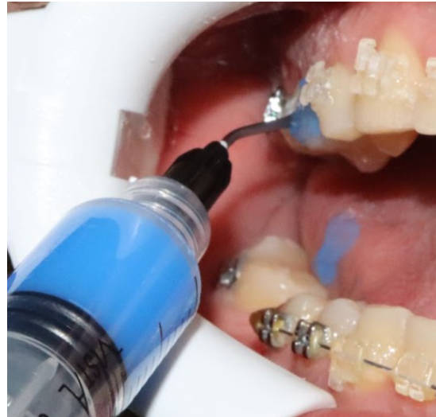
AO uses Opal Etch. Place the etchant on the enamel surface where the bracket will be bonded.
Do not allow etch to contact the lips, cheeks, gingiva, or other soft tissue. Phosphoric acid etch can cause a chemical burn. Maintain control of the syringe at all times.
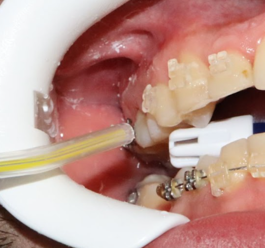
7 · Rinse thoroughly
Suction the etchant, rinse the tooth thoroughly, remove all visible etchant, and continue suctioning during the rinse. Do not rush this step.
8 · Create excellent isolation
Isolation is one of the most important parts of a successful repair. Saliva contamination significantly weakens the bond. For posterior brackets we commonly use this technique:
- Create a Z bend in the slow-speed suctionBend it into a shape that rests comfortably and helps control saliva.
- Place a cotton rollBetween the tongue and the lingual surface of the teeth being bonded, keeping tongue and saliva away from the bonding area.
- Have the patient bite on the suctionPosition it so the patient can gently bite, with the cotton roll remaining between tongue and teeth.
- Have the patient help hold itOnce positioned, have the patient gently hold the suction if appropriate. This frees your hands while maintaining isolation.
9 · Dry and inspect the enamel
Air dry thoroughly. A properly etched surface should have a frosty or chalky appearance.
Re-etch the tooth. Do not continue simply because you have already completed the etching step. A poor etched appearance can indicate inadequate preparation or contamination.
10 · Keep the tooth dry
Once etched and dried, isolation becomes critical. Do not allow tongue contact, saliva, moisture, or lip and cheek contact. If contamination occurs, stop and correct it before continuing.
11 · Apply Assure Plus to the tooth
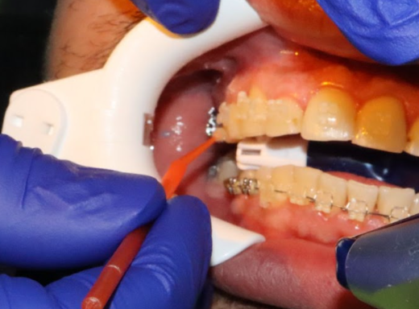
A small amount onto a microbrush, rubbed across the entire prepared enamel surface — not only the center of the tooth. Then air dry. The goal is to spread the primer evenly, thin the material, and avoid pooling. The tooth should have a very thin layer.
12 · Place the bracket
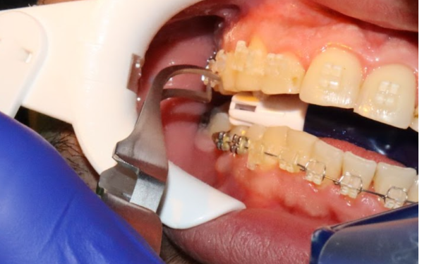
Remove the prepared bracket from under the blue light blocker and place it on the tooth. At this point the bracket should be ready for the doctor, who positions it for mesial-distal position, incisal-gingival position, angulation, and rotation. Have everything ready so the doctor can position efficiently.
13 · Remove excess adhesive
Once the doctor confirms position, carefully remove excess adhesive from the gingival, mesial, distal, and incisal or occlusal edges. Do not disturb the bracket while cleaning.
14 · Cure from a distance first
Do not immediately place the curing light directly against the bracket. Start slightly farther away, which reduces the chance of bumping the bracket before the adhesive has stabilized. After the initial cure, move the light closer.
15 · Triple cure the bracket
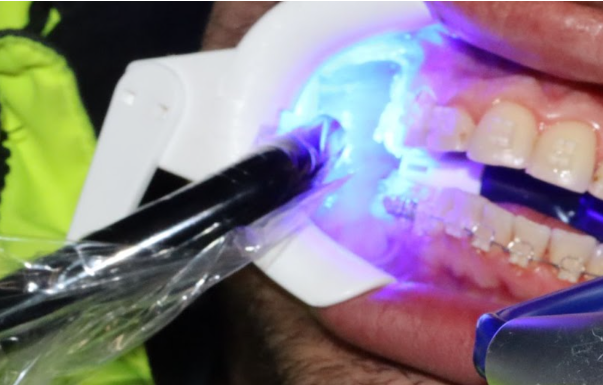
At AO, brackets are commonly cured three times, approximately 3 seconds per cure, from three different angles around the bracket — for example mesial, distal, and occlusal or incisal. The exact technique should follow the curing light and adhesive manufacturer instructions used in the office.
16 · Remove isolation and let the patient rinse
Remove the cotton roll, remove the suction, carefully remove the retractors, and give the patient a rinse. Make sure no bonding debris remains around the bracket or gingiva.
17 · Check the bite
Have the patient bite all the way down. Check whether the opposing teeth are contacting the newly bonded bracket.
Do not dismiss the patient. Notify the doctor. Heavy occlusal contact can cause the bracket to break again almost immediately.
The workflow
DRY → PRIME → PLACE → POSITION → CLEAN → CURE → RINSE → CHECK BITE
After bonding
Have the tooth and bracket completely prepared so the doctor can arrive, position the bracket, and move efficiently to the next patient. The better the communication with the clinic coordinator, the smoother the entire clinic runs.
Section 2The radio call
Do not wait until the patient is completely ready before notifying the team. The clinic coordinator needs advance notice so they can coordinate the doctor's movement, compare priorities between chairs, update the light bar, and stop one broken bracket from disrupting the entire clinic.
All technicians carry a Motorola radio with a headset. The front desk has a handheld. We use it primarily to coordinate patient flow and to ask for help gathering supplies missing from a procedure.
"Chair 4. One broken bracket on the lower canine. I'll need Dr. Lee in three minutes."
That should become automatic.
Chair 4. I have one broken bracket on an incisor. I'm going to prep this bracket and I'll need Dr. Lee in three minutes.
Dr. Lee, I have a broken bracket.
This tells the team almost nothing. They do not know where the patient is, how much work is required, or when the doctor should arrive.
Also not acceptable: "I need Dr. Lee." · "I have a broken bracket." · "Can somebody get the doctor?"
The call should immediately answer three questions: Where are you? What does the doctor need to do? When do you need the doctor?
The three pieces
- Chair numberTell everyone exactly where you are.
- Number and location of the broken brackets"One broken bracket on the lower canine." "Two broken brackets, UL2 and UL3." "One broken bracket on an incisor."
- ETA for the doctorEstimate when the patient will actually be ready. "I'll need Dr. Lee in three minutes." "I'll have the patient isolated and ready in five minutes."
During the adjustment, check for loose or broken brackets. If a bracket moves when tested, confirm which tooth is involved, how many are broken, and roughly how much preparation is needed before the doctor can bond. Do not simply continue the appointment without communicating the finding.
The coordinator's side
Priority: who needs the doctor first? Handoff: can the technician with the doctor take over? Next step: what should each waiting chair continue doing?
"Chair 4, copy. Chair 3 is ahead of you with two broken brackets. Advance the upper wire while you wait. Tech 1, can you take over Chair 1 so Dr. Lee can move to Chair 3?"
That turns several individual chairs into one coordinated clinic. The coordinator determines where the doctor is currently working, what other patients are waiting, which patient is ready first, which procedures need immediate doctor involvement, and whether another technician can take over the doctor's current patient. The clinic coordinator, not the individual technician, controls the order in which the doctor moves between chairs.
Section 3The light bar
The light bar is the clinic's visual traffic-control system. When the patient's needs change, the light bar should change with them. It should always reflect what is actually happening clinically.
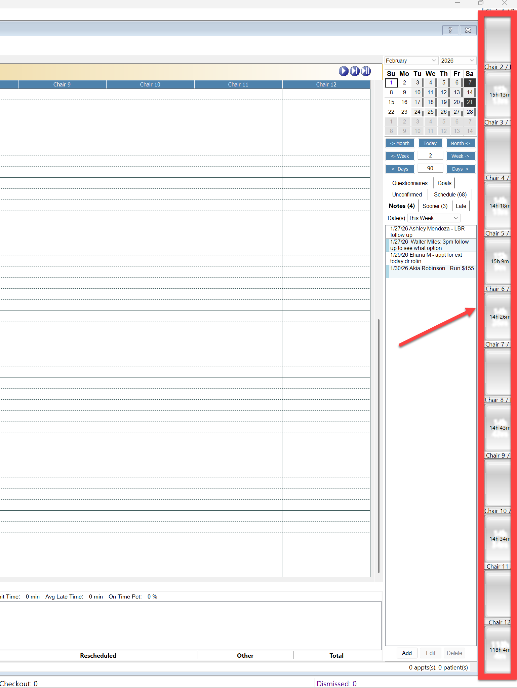
Two ways to change a status
- From the light barLocate the patient, double left-click, and change their Lighting System status. The patient's color changes.
- Quick Light BarInside the patient's Treatment Card, usually lower left, select the status directly without leaving the chart.
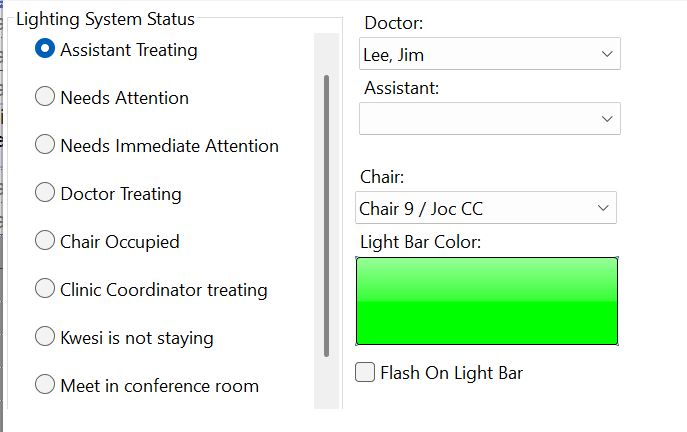
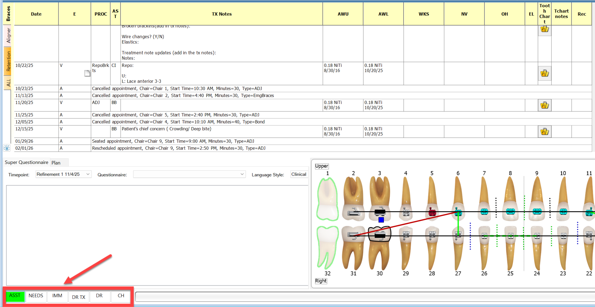
The three that matter most for broken brackets

Assistant Treatment Patient
The technician is actively treating the patient.
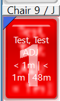
Attention Needed
The patient requires significant doctor attention. A broken bracket repair is a bonding procedure, so it falls here.
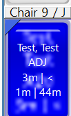
Doctor Is Currently Treating
The doctor is at the chair performing treatment.

The rest of the statuses
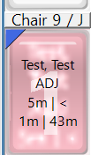
Chair Occupied
The patient is seated but no technician is currently available to treat them.
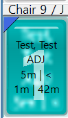
Quick Check
A brief doctor check, usually no more than about two minutes before dismissal.

Meet in Conference Room
Discussion needed before entering the treatment area: updates from the dentist, patient concerns, complex treatment plans, refinement scans, consultations for new patients and debonds.
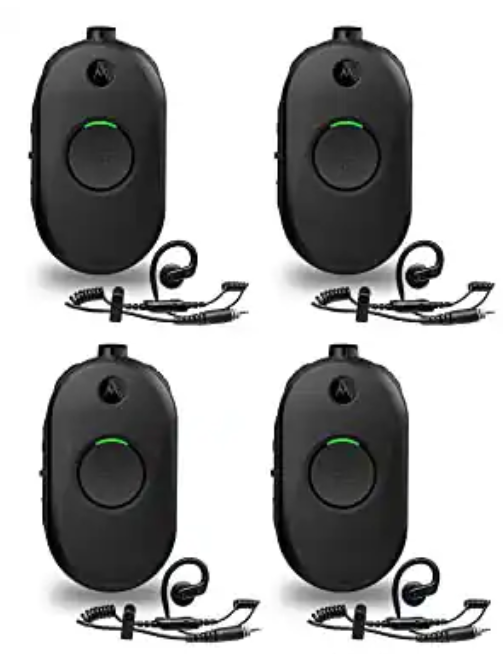
Clinic Coordinator Is Treating
The coordinator has stepped in as a backup technician because the clinic is behind. The assigned tech should take back over when free.
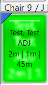
Section 4Clinic flow: priority and handoff
There may be several chairs requiring the doctor at the same time. Chair 4 has one broken bracket and needs the doctor in three minutes. Chair 3 has two broken brackets, already prepared, and needs the doctor now. The coordinator establishes the order.
"Okay, Chair 4. We have a patient in Chair 3 ahead of you with two broken brackets. Go ahead and advance the wire on the upper arch. We will need Dr. Lee in Chair 3 first."
The light bar and the radio should tell the same story. Everyone can see which patients require attention, while the coordinator verbally controls the order.
Keep working while you wait
A broken bracket should not stop the entire appointment. If the coordinator says another patient must be seen first, continue whatever parts of the appointment can safely be completed. This is one of the biggest differences between an efficient clinic and a bottleneck.
Create the handoff before you are asked
When the coordinator announces that Dr. Lee is needed elsewhere, the technician currently working with the doctor should be listening. If you can finish the remaining portion of that appointment, say so proactively.
I can take this adjustment from here, Dr. Lee. I'll finish writing this note and take over. They need you in Chair 3.
Can somebody take over for me?
The team should anticipate the transition rather than waiting to be asked.
The transition
- Doctor completes the immediate stepRemoves the instrument from the patient's mouth and places it on the tray.
- Technician moves into the working positionThe first patient keeps progressing rather than sitting unattended.
- Doctor leaves for the prioritized chair
- Update the light bar to Doctor Is Currently TreatingOnce the doctor reaches the broken-bracket patient and begins treatment.
- Coordinator releases the next chair"Okay, Dr. Lee is in Chair 3. Chair 4, you can start prepping for the broken bracket." Now the timing of the final preparation matches the doctor's expected availability.
- Prepare before the doctor arrivesThe doctor should walk into a ready patient and perform only the doctor-specific portion, not arrive and wait.
- After the doctor finishesUpdate the light bar again. If you are completing the appointment, the patient returns to Assistant Treatment Patient. Then finish the clinical work and the documentation.
The whole system
Coordinator establishes priority → Current tech creates doctor handoff →
Doctor goes to highest-priority chair → Light bar changes to Doctor Treating →
Next chair begins preparation → Doctor transitions again without waiting
Not simply to get Dr. Lee to the broken bracket as quickly as possible. The goal is to get Dr. Lee to the right patient at the right time, while every other technician continues moving their own patient forward.
Section 5Before the patient leaves the chair
1 · Poking or discomfort
2 · Ties and ligatures
3 · The archwire
4 · Treatment mechanics
5 · Elastics
6 · Oral hygiene
7 · The bite
8 · Archwire coordination, when appropriate
9 · Patient supplies
10 · Documentation and next visit
Section 6ReliaWax
ReliaWax is a light-cured, wax-like material used to cover irritating brackets, hooks, wires, or other orthodontic projections. Unlike regular patient wax it is placed in the office, cured with a curing light, and can stay in place much longer — through routine eating and brushing.
- Dry the area thoroughlyThe bracket, wire, or appliance surface must be completely dry. No primer or additional bonding preparation is required.
- Apply ReliaWaxPlace a disposable tip on the syringe and express a small amount directly over the irritating area.
- Cover the entire projectionShape it so it completely surrounds the sharp portion and extends slightly onto the surrounding appliance. This helps it stay securely in place.
- Light cureCure for the appropriate time based on the light being used. Make sure the patient and clinical team are wearing proper curing-light eye protection.
- Check for comfortGently check the surface. It should create a smooth barrier between the appliance and the patient's cheek or lip.
ReliaWax can later be removed in one cohesive piece when it is no longer needed.
Lesson 5 practical check-off
End-of-lesson review
Run a live skit with the clinic coordinator: two chairs with broken brackets at once, competing ETAs, and a doctor handoff. The repair technique can be practiced on a typodont. The communication cannot, and it is the part that decides whether the clinic runs on time.